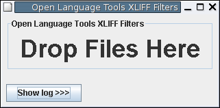
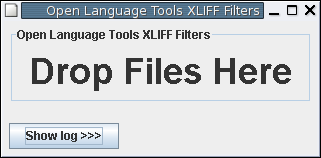

|
 |
Philosophy | Releases | Report a bug | How you can help | License | FAQ | Documentation
The Open Language Tools are a set of translation tools that aim to make the task of translating software and documentation a lot easier. Initially, they comprise of a full-featured XLIFF Translation Editor and a set of XLIFF file-filters for a number of documentation and software file formats.
Our intended audience is tools developers and translators of software and documentation - both professional translators and those just doing it for kicks !
The current list of supported file formats is :
Documentation file types
Software file types
Here are screenshots of the XLIFF Translation Editor (click for a larger image) and the XLIFF Filters GUI :
|
|
 |
Some more information on translation tools in general, and these tools in particular, can be seen over on Tim's Web Log - check out the XLIFF Editor demo !
We believe that computers are tools that can help people - in our case, we want computers to help translators. Anything that can be done to help translators improve the quality of their work, or reduce the amount of time it takes to do translation is definitely within the scope of this project. We strongly believe in the value of shared open standards - everything we do should be based on open standards, and should interoperate via those standards.
Lastly writing translation tools is a noble cause : we believe that we should be doing all we can to break down the Digital divide, and language is one aspect of that. If you can't use a computer because it's not translated to your native language, then we want to provide tools to fix that problem.
We have the following components available :
Stable releases:| Component | UNIX version | win32 version |
| Open Language Tools XLIFF Translation Editor | offline | offline |
| Open Language Tools XLIFF Filters | offline | offline |
If your platform isn't listed, download the UNIX version
You should at least read the QuickStart Guides for the Editor and Filters before starting to use the tools. Nightly builds of the latest development snapshot are available here : try these out if you're finding problems in the milestone releases : we may have already fixed your issue.
Where:
<PROJECT>_<SRCLANG>_<TGTLANG>.MTM
C:\Documents and Settings\bob\.xliffeditor\mini-tm\ABCD_EN_FR.MTMon Unix it would be in this directory:
/home/bob/.xliffeditor/mini-tm/ABCD_EN_FR.MTM
We're interested in people working with us at all levels. There are mailing lists set up for developers and users, and we have an issue-tracking system that is waiting to be filled with bug reports.
Here's a few categories you as a member of the Open Language Tools project might fall into - these are all areas that we need help in, so we'd love to have you work in any (or all, if you're super talented!) of these categories :
Users - Do you use translation tools ? We'd love to hear your feedback
Testers - Our tools have bugs in them and you can help find them and gain the undying gratitude of users and developers alike ! Let us know if you can help (and file an issue at the same time !) (I'm still working on configuring the issue tracker)
GUI Developers - Are you proficient in Swing, if so the Translation Editor could use your help.
Filter Developers - Maybe you're a command-line junkie (like me) or you're an expert in file formats we don't yet cover, you might be interested in looking at the XLIFF Filters, please drop us a mail
i18n Developers - While everything we do in the Open Language Tools project is based around Unicode, we haven't yet written proper messaging-handling support into our code, so we're in the embarrassing situation of writing translation tools that can't actually be translated ! We need your help !
Technical writers - Think you can do a better job documenting our software ? (probably not too hard) Please, let us know - we don't have much documentation at the moment.
Translators - Apart from being the experts in translation tools, maybe you'd like to try translating our software or documentation into other languages ? You can start by reading the Localization Guide and contribute your l10n files, suggestions and comments by email.
Graphics designers - Our project lacks good icons and graphical elements, and our home page contains just text. Perhaps you'd like to help brighten things up ? Talk to us
I'm sure there's other areas we need help in - in fact, maybe we need help in
determining where we need help :-)
We'd really appreciate your input : you're welcome and encouraged to join project Open Language Tools as an Observer - if you've got cool stuff to submit back to us, we can definitely chat about making you a Developer.
These tools are available under the terms of the Common Development and Distribution License (CDDL).